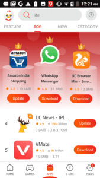
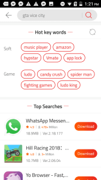

9Apps 用了近两年，从"凑合装应用"到"离不开的轻量版仓库"
从一台没装 Google Play 的旧安卓机开始接触 9Apps，两年下来轻量版筛选和本地化推荐成了日常依赖，广告和偶发的兼容性坑也慢慢摸清了脾气。
装 9Apps 是在两年前，那台备用机没 Google 框架，又不想专门刷机，就随手装了它凑活用。当初的想法很简单——能下载 APK 就行，跟国内那些应用商店没多大区别。没想到一用就是两年，中间换了手机也没卸载，对它的看法倒是翻了好几番。
当初为什么装，和现在为什么没卸
开头纯粹是权宜之计。手上那台 Android 7 的入门机，RAM 才 2GB，内部存储 16GB，没有 Google Play，装个应用比登天还难。搜了一圈找到了 9Apps官网，打开一看应用库还挺全，Facebook、WhatsApp、UC Browser 这些都有，甚至还有不少国内商店看不到的海外应用。
现在回头看，那时候只是用它当一个 APK 下载器——搜应用、下载、安装，三个步骤走完就关掉。真正让我留下来的，是后来慢慢发现的几个当初根本没在意的功能。
越用越顺手：轻量版筛选成了刚需
第一个变化发生在半年前。那台旧机越来越卡，装个 Facebook 标准版 150MB，装完占三百多兆，加上运行内存直接把 2GB RAM 吃满。抱着试试看的心态在分类页把体积筛选切到了 5MB 以下，结果出来的东西让我有点意外——Facebook Lite 才 2MB，Messenger Lite 10MB，YouTube Go 也才十几兆。装了几个试试，旧机居然又能正常跑了。

从那以后轻量版筛选就成了我的默认操作。每次找应用先看有没有 Lite 版，有就优先装。不是说标准版不好，而是对于配置有限的设备来说，砍掉视频通话、AR 特效、动态表情这些东西，换来的是流畅和省空间——这才是实用主义。
现在换了新手机，4GB RAM 的机器跑标准版完全没问题，但我还是习惯性地先搜一下有没有 Lite。习惯这种东西一旦养成就很难改，而且说实话，大部分社交和工具类应用的核心功能——发消息、浏览内容、搜索、设置——轻量版都保留了，真没觉得少了什么。
越用越烦：广告和偶发的兼容性坑
说好的地方有，闹心的也不少。9Apps 有广告，而且不是那种关了就完的弹窗广告——首页推荐里混着付费推广的应用，有时候刷着刷着就出来一个完全不相关的游戏或者工具。虽然可以长按跳过，但架不住频率高。
比广告更烦的是偶发的兼容性问题。去年有一阵子装 WhatsApp 老是闪退，一点图标就秒退，连启动画面都看不到。一开始以为是手机的问题，清缓存、清 RAM、重启，什么都试过了没用。后来去 9Apps文档 翻了一下才发现，9Apps 上同一个应用有好几个版本——最新版要求 Android 8+，而我的旧机是 Android 7。搜了旧版本号 2.21.0.0，装完就好了。

还有一次是装了一个新输入法，结果系统自带的浏览器开始频繁崩溃。卸了输入法浏览器就恢复了，装回去又崩。这种应用冲突的问题不常见，但排查起来特别头疼——你得回忆最近装了什么，一个一个试。
慢慢也摸出了一些规律。闪退的时候先清缓存，不行就看版本兼容性，再不行就换个渠道试试。大概 85% 的问题在前几步就能解决，但剩下那 15% 真的很折磨人。
每天离不开的和碰都没碰的
模拟器配合 9Apps 下 APK 批量传手机，成了我最近半年的日常操作。在电脑上开着 Nox Player，里面装 9Apps，把想下的应用都搜好下载，然后批量导出到手机。比在手机上一个一个搜一个一个下快多了，而且 9Apps 本身没有 PC 客户端，这算是自己摸出来的变通方案。
锁屏推荐功能我一次都没碰过。默认是关掉的，试过开了两天，每次亮屏都出来一个推荐应用，感觉很打扰，就又关了。可能对新用户来说是个发现新应用的好方式，但对于已经有明确目标的老用户来说，这个功能反而是噪音。
至于智能推荐引擎——用了大概三个月之后开始有感觉了。首页的"为你推荐"区域，慢慢开始出现我确实感兴趣的应用。经常逛工具分类，它就给我推更多工具类；下过几个印度本地应用，区域推荐里就出现了更多本地化内容。冷启动的时候确实没什么用，但积累了足够的浏览和下载历史之后，推荐质量提升得很明显。
观感修正：当初的判断哪些变了
刚装的时候以为 9Apps 就是个"民间应用商店"，可能有不少第三方修改版、破解版之类的东西。用了两年发现，大部分热门应用的官方版本都能在上面找到，第三方版本也有，但应用详情页的开发者信息和用户评论能帮你分辨。不是说完全没有风险，但只要养成看开发者和评论的习惯，踩坑的概率其实不高。
相反，当初没当回事的轻量版筛选和区域推荐，现在看来才是 9Apps 真正的差异化优势。Google Play 上当然也有 Lite 版，但不会专门帮你把所有小于 5MB 的应用筛出来放在一眼能看到的地方。区域推荐也是——国内的应用商店不会专门给你推印度的支付应用，9Apps 会，而且做得还挺准。
去留结论：还会继续用，但有条件
短期内不会卸载。轻量版筛选这个功能在其他商店里还真没见过做得这么直接的，模拟器配合下 APK 的场景也已经习惯了。智能推荐也越来越懂我，换了新手机之后在 9Apps 里还是能很快找到想要的东西。
但如果哪天出现两个信号，可能会考虑换一个。一是广告再多一点——现在已经有点烦了，如果变成全屏弹窗那种，真忍不了。二是应用库的质量下降——如果官方版本越来越少，第三方修改版越来越多，那风险就太高了。目前这两个都还没到临界点，所以继续留着。
总结下来，9Apps 不是那种完美的应用商店，它有广告、有偶发的兼容性坑、有时候推荐也会跑偏。但它在低配手机支持、轻量版应用覆盖、本地化推荐这几个点上确实做得不错，而且作为没有 Google 框架设备的替代方案，几乎没什么像样的竞争对手。对我来说，它已经从一个"凑活用的临时工具"变成了日常使用的一部分——就像一个你用久了的旧手机壳，不花哨但顺手，换了反而不习惯。
这套资料在三个仓库都能拿到，GitHub 主仓库维护着完整文档，Gitee 和 GitCode 方便国内用户直接访问，不会因为网络问题卡住。